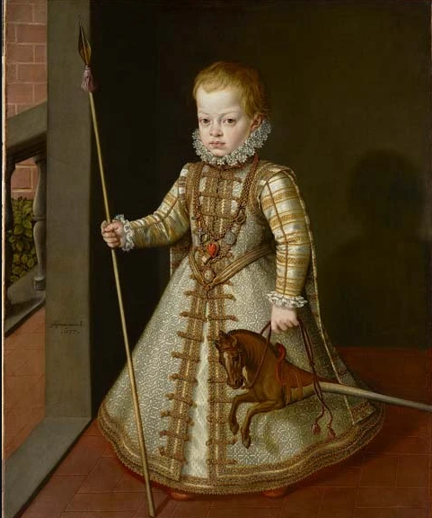
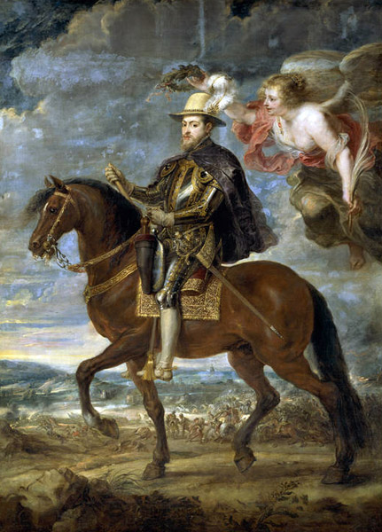
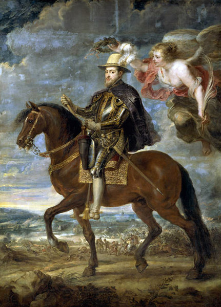

Infancia
Felipe II nació en el Palacio de Pimentel en Valladolid, España, como el único hijo legítimo del emperador Carlos V y la emperatriz Isabel de Portugal. Desde joven, fue educado para ser rey y recibió una formación rigurosa en política, administración y religión. Su educación fue influenciada por humanistas de la época, y desde pequeño fue preparado para asumir el trono.

Acontecimientos importantes
Expansión del Imperio Español: Durante su reinado, España controlaba vastos territorios en Europa, América, Asia y África. La anexión de Portugal en 1580 añadió las colonias portuguesas al Imperio Español, consolidando la hegemonía española.
Batalla de Lepanto (1571): Felipe II dirigió la Liga Santa, una coalición de fuerzas cristianas que derrotó a la flota otomana en la batalla de Lepanto. Esta victoria detuvo el avance otomano en el Mediterráneo y fue uno de los mayores éxitos militares de su reinado.
La Armada Invencible (1588): Uno de los episodios más conocidos de su reinado fue la fallida invasión de Inglaterra con la Armada Invencible. Aunque la expedición fue un desastre, la defensa de la fe católica y su lucha contra la expansión del protestantismo marcaron su política exterior.

 
